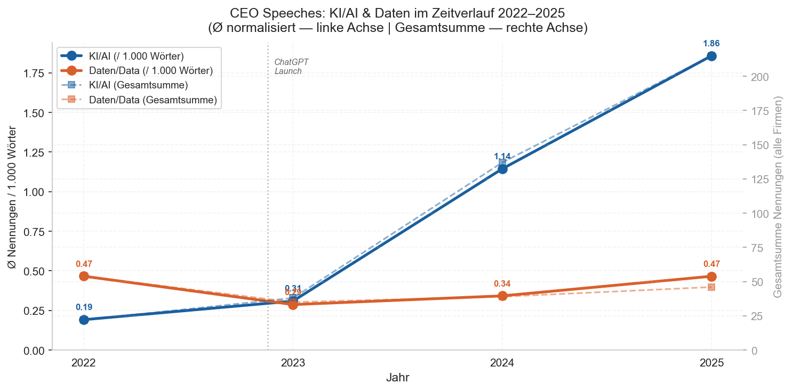
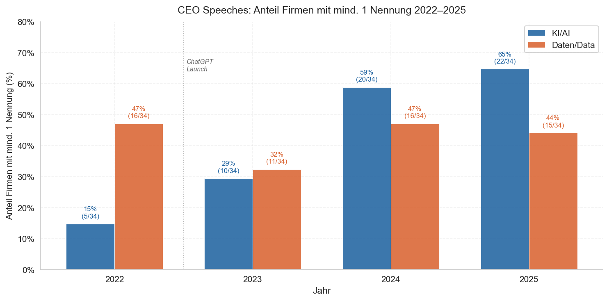
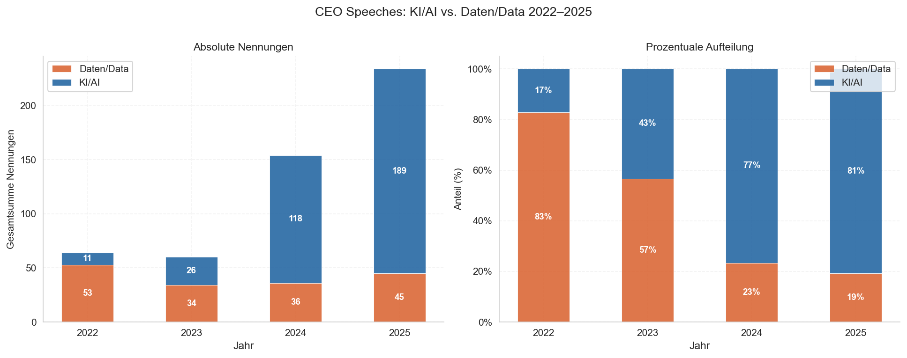
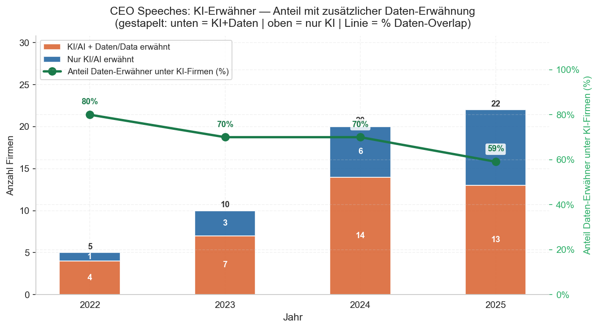
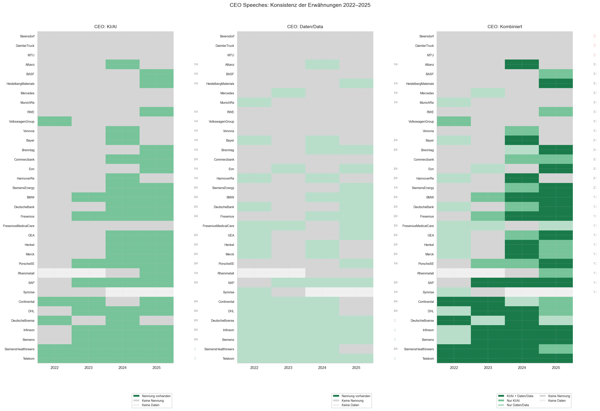

Je mehr DAX-CEOs über KI reden,
desto weniger erwähnen sie Daten.
Analyse von 136 Hauptversammlungsreden von CEOs der DAX-Unternehmen, 2022–2025.
Der ChatGPT-Effekt überträgt sich nachhaltig auf Unternehmenskommunikation


Die KI-Erwähnungen in CEO-Reden lagen 2022 noch bei 0,19 pro 1.000 Wörter — nur 24% der CEOs erwähnten das Thema überhaupt. Der ChatGPT-Launch Ende 2022 veränderte dann etwas grundlegend. Bis 2025 stieg dieser Wert auf 1,86; der Anteil der Reden mit KI-Erwähnung auf 76%.
Daten sind nicht verschwunden — aber verdrängt

2022 machten Daten-Begriffe 71% aller Nennungen in CEO-Reden aus. KI war ein Nebenthema. Drei Jahre später hat sich das Verhältnis umgekehrt: KI steht für 82%, Daten für 18%.
In absoluten Zahlen ist das ein leichter Rückgang — Daten-Nennungen sinken von 54 auf 46. Aber relativ zur KI-Rhetorik verliert das Thema Daten seinen Stellenwert in der öffentlichen Kommunikation.
Wer KI sagt, sagt nicht unbedingt Daten

Von den CEOs, die 2025 KI erwähnen, sprechen nur 54% auch über Daten — Tendenz fallend. 2022 lag dieser Wert noch bei 88%.
Damit erwähnen nur 41% aller CEOs 2025 KI und Daten gemeinsam. Je mehr CEOs über KI sprechen, desto kleiner wird der Anteil, der dabei auch die Datenbasis thematisiert.
Vier Unternehmen — vier Jahre Schweigen

Vier DAX-Unternehmen erwähnten KI in keiner einzigen CEO-Rede zwischen 2022 und 2025 (Beiersdorf, Daimler Truck, MTU, Munich Re). Gleichzeitig adressiert eine wachsende Gruppe — darunter SAP, Siemens, Infineon — das Thema seit dem KI-Shift jedes Jahr. Die Deutsche Telekom und Siemens sind die einzigen Unternehmen, die jedes Jahr KI und Daten zusammen erwähnen.
Bemerkenswert: Alle Unternehmen aus dem (ehemaligen) Siemens-Konzern (Siemens Energy, Siemens Healthineers, Infineon, Siemens) erwähnen seit mindestens zwei Jahren konsequent KI in ihren CEO-Reden.
Was bedeutet das?
Im Jahr 2025 erwähnt ein Viertel der CEOs von DAX-Unternehmen KI überhaupt nicht, und bei ~50 % fehlt die Erwähnung von Daten. Da KI in den kommenden Jahren einer der wichtigsten Werttreiber für Unternehmen und Aktionäre sein wird, wirft dieses Schweigen die Frage auf, wie zuversichtlich Unternehmen sind, aus dieser Technologie eigene Wertsteigerung zu ziehen. Vier Unternehmen gingen im Beobachtungszeitraum sogar in keiner einzigen ihrer Reden auf KI ein.
Im Vergleich zu KI-Erwähnungen nennen gut 50% weniger Unternehmen Daten, wobei das Verhältnis der Gesamtnennungen in den CEO-Reden bei 4:1 liegt. Zudem ging die Erwähnung von KI in Verbindung mit Daten von 88 % im Jahr 2022 auf 54 % im Jahr 2025 zurück.
Ob dieses Schweigen operative Prioritäten widerspiegelt oder ob Datenstrategie intern kommuniziert wird — das bleibt offen. Genau das will ich in Interviews mit Verantwortlichen herausfinden.
Ich suche Gesprächspartner
Wie hat der KI-Shift die Auseinandersetzung mit Datenverfügbarkeit in Organisationen verändert — und was tuen Unternehmen, um intern Datenverfügbarkeit zu steigern?
Wenn du Datenstrategie, Data Governance oder KI-Implementierung in einem größeren Unternehmen verantwortest und 55 Minuten Zeit hast, freue ich mich über eine Nachricht. Teilnehmende erhalten die vollständigen Ergebnisse der Studie in aufbereiter Form.
Kontakt aufnehmenTimotheus Gumpp · Masterarbeit · Universität Mannheim · tgumpp@mail.uni-mannheim.de
Datenbasis & Vorgehen
Analysiert wurden CEO-Reden der DAX-40-Unternehmen von 2022–2025 (DAX-Zugehörigkeit Stand März 2026). Die Datenbasis umfasst 136 Reden aus 35 Unternehmen.
Ausnahmen
- Keine Daten verfügbar: Airbus, Qiagen
- Kein Transkript verfügbar: Scout24, Zalando, Adidas
- Unvollständige Daten: Symrise (nur 2022/23), Rheinmetall (nur 2024/25)
Gezählt wurden Erwähnungen der Keyword-Gruppen KI (inkl. Künstliche Intelligenz, AI, Machine Learning, GenAI, LLM) und Daten (inkl. Daten, Data, data-driven), normalisiert auf 1.000 Wörter je Dokument — unabhängig von der Sprache der Rede.
Eignung der Daten
Das Format einer CEO-Rede bei der Hauptversammlung ist für börsennotierte Firmen über Firmengröße, Geschäftsmodell und Branche hinweg vergleichbar und eignet sich folglich gut für größere statistische Auswertungen. Die Reden sind stets an Investoren gerichtet, die Markt- und Technologieentwicklungen auf ihr Wertschöpfungspotenzial hin beurteilen. Systematische Analysen zur Häufigkeit dieser Begriffe geben Aufschluss darüber, wie zuversichtlich Unternehmen sind, aus KI und Daten eigene Wertsteigerungen zu ziehen.
Reproduzierbarkeit
Die Analyse ist vollständig reproduzierbar. Code und Methodik sind dokumentiert und stehen auf GitHub bereit.